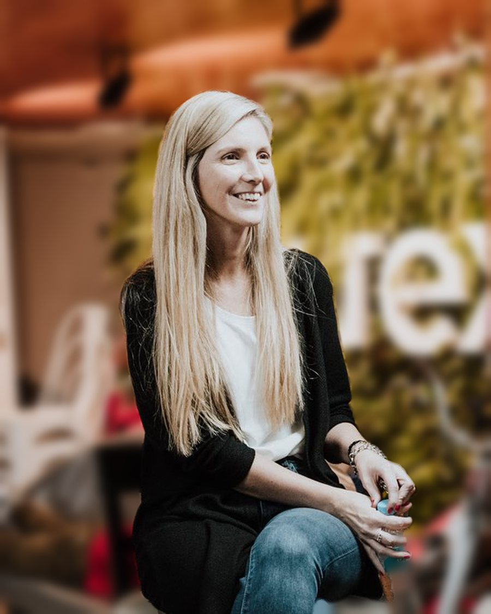
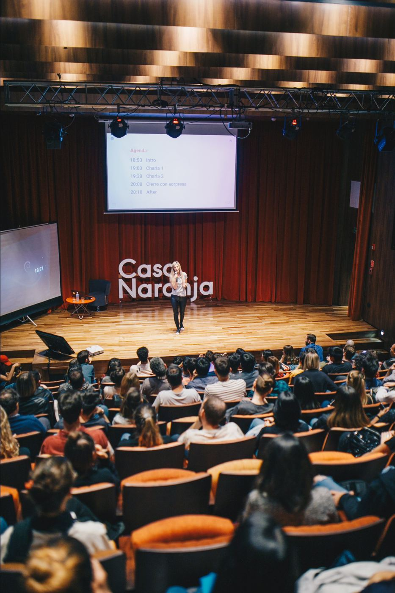
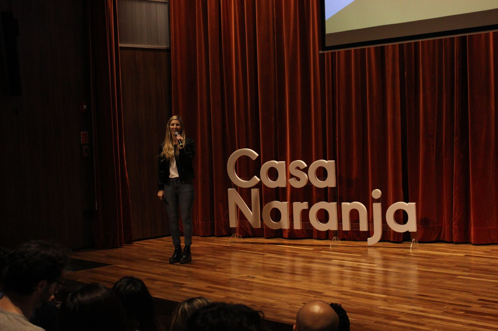
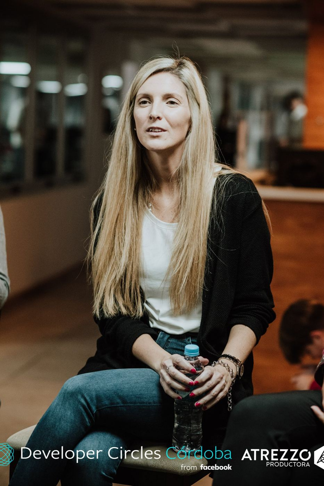
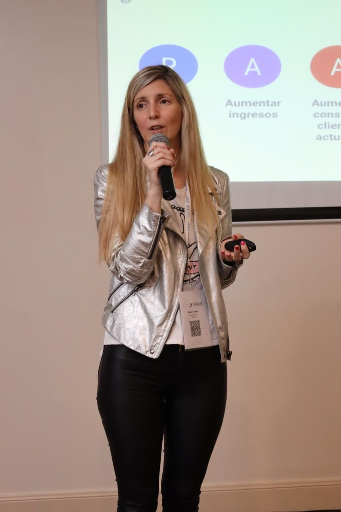
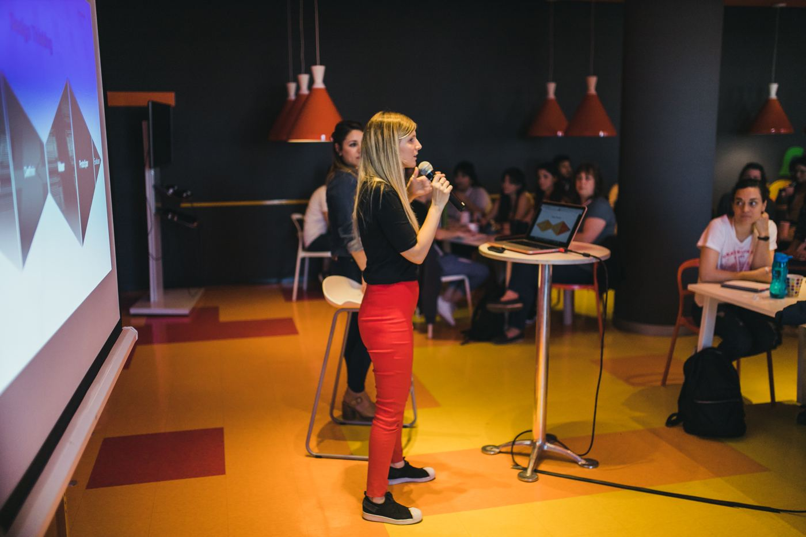
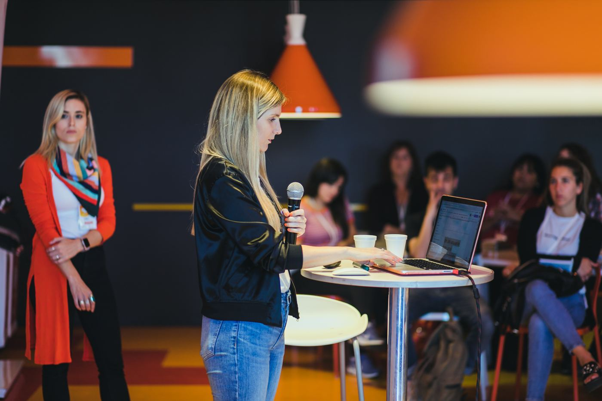
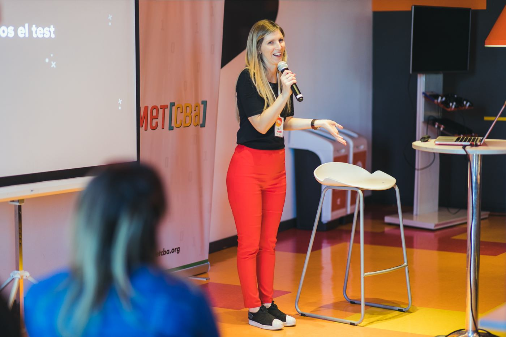

Oct 2026 — Hoy
Angel Investor & Board Member · CEIBO
- Participo del directorio aportando visión estratégica de producto y experiencia de cliente.
Diseño de experiencia y producto · desde 2012
Especialista en diseño de experiencia y producto. Hace +12 años que transformo lo que conocemos y entendemos de los clientes en decisiones de diseño.

Especialista en experiencia y producto con más de 12 años diseñando y liderando experiencias de punta a punta en compañías de alto volumen de clientes como Mercado Libre, Naranja X e Inviu (Grupo Galicia). Combino visión estratégica de negocio con conocimiento del cliente: traduzco investigación, datos y feedback en decisiones, objetivos y métricas.
Lideré equipos multidisciplinarios de producto, diseño, contenido y marketing, definí estrategias con objetivos anuales y trimestrales, y construí desde cero estructuras de roles, escalas de seniority, procesos de evaluación y hiring. Impulso culturas centradas en las personas, donde el feedback es clave y todo lo que hacemos es en pos de un objetivo.
Visión, objetivos anuales y por trimestre, roadmaps y priorización junto a negocio.
Workshops de journey con clientes y equipos para detectar puntos de dolor y oportunidades en todo el ciclo.
Entrevistas, testeos, encuestas y análisis de comportamiento (Maze, Hotjar) convertidos en planes de acción.
Implementación de CES, uso de NPS y CSAT, métricas de éxito y de progreso ligadas a resultados de negocio.
Diseño de roles, escalas de seniority, metodologías de evaluación y procesos de hiring.
Prácticas centradas en el cliente en startups y corporaciones; influencia transversal y comunicación ejecutiva.
Oct 2026 — Hoy
Jun 2023 — Hoy
Clientes de EE.UU. y multinacionales
Oct 2022 — Jun 2023
Agtech
Ago 2022 — Oct 2022
Jul 2021 — Ago 2022
Grupo Galicia · Fintech
Oct 2020 — Jul 2021
Feb 2020 — Oct 2020
Oct 2017 — Feb 2020
Antes Senior UX Designer · Fintech
Nov 2014 — Sep 2017
E-commerce
Experiencia previa (2010 – 2014): Chief Interface Officer & Team Manager en TopicFlower; UX/UI Designer en netTALK; diseño gráfico y contenidos en Azonia, Folowit e Hiades.
Liderazgo UX, roadmaps, trade-offs y toma de decisiones, estrategia y rol ejecutivo.
Estrategia de producto y diseño de equipos.
Delegación, comunicación asertiva y coaching de equipos.
Con formación en marketing y comportamiento del consumidor.







Data-driven design: cómo convertirte en influencer en tu organización
Métricas de UX aplicadas a casos reales, junto a Laura de Miguel (Nerdeala).
17° Congreso Nacional de Crédito
La experiencia como pilar de la estrategia de negocio.
Mercado Libre Experience y Jornadas de Informática UCSE
UX como aliado estratégico del desarrollo de software.
Docente de Diseño de Experiencias Digitales
Diplomatura de Marketing Digital, Mundos E.
Mentora UX/UI en Acámica
Speaker en Potencia Emprendedora, Le Wagon y Mujeres en Tecnología.
Junto a Laura de Miguel: métricas de UX explicadas en teoría y aplicadas a casos reales.
Ver en YouTube ↗Panel junto a Hernán Cattaneo e Iván Aballay.
Ver en YouTube ↗Recorrido de carrera, de startups a grandes compañías.
Ver en YouTube ↗Cómo es diseñar productos de inversión.
Ver en YouTube ↗Accesibilidad y diseño universal, producido por Mujeres en Tecnología.
Ver en Spotify ↗